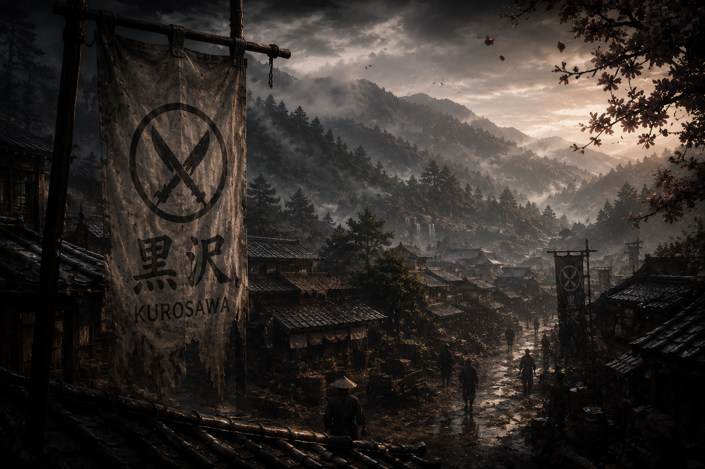
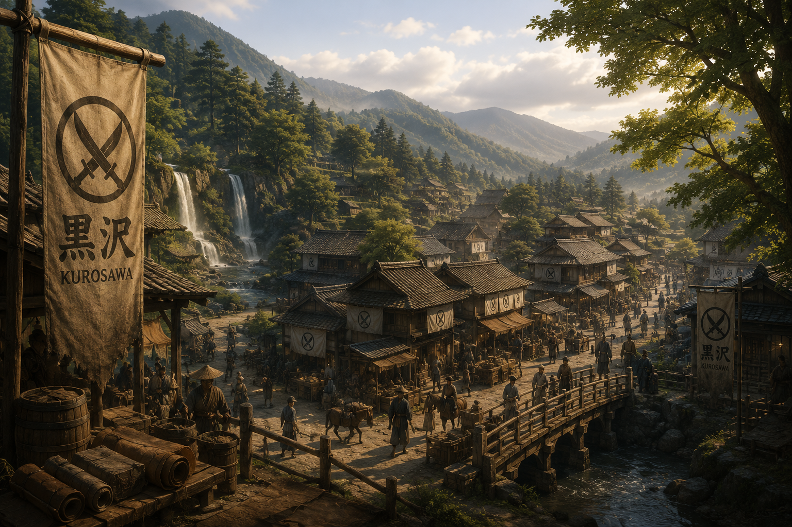
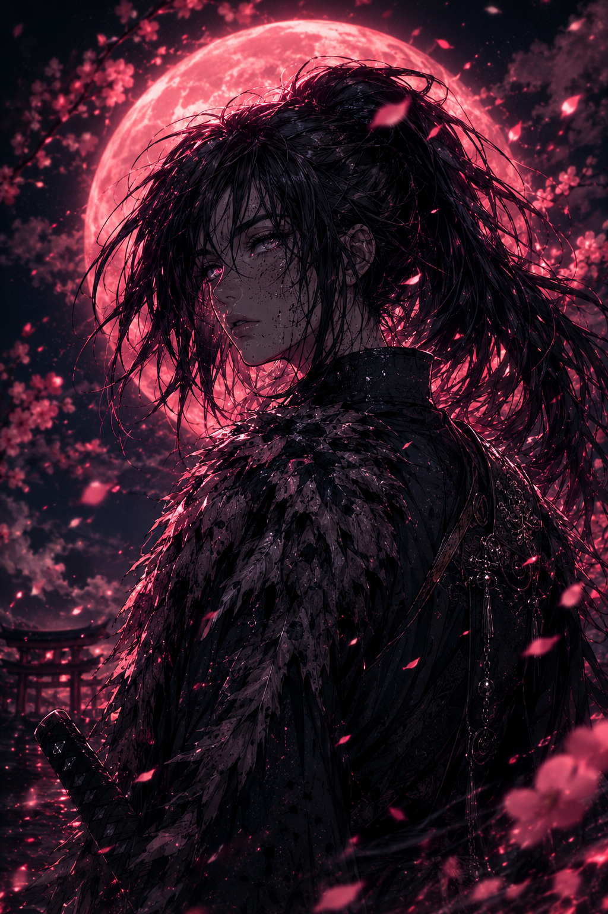
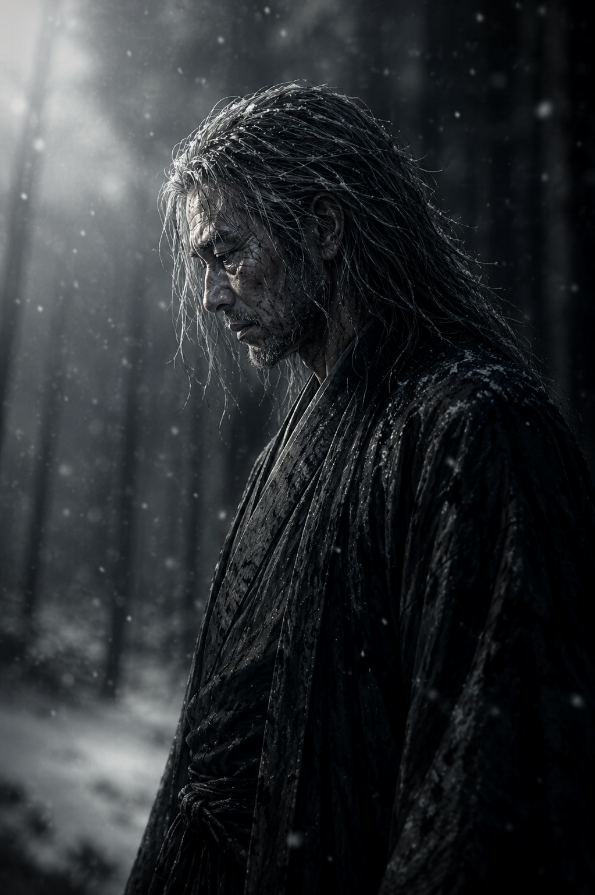

Nem todos os clãs nasceram para conquistar. Alguns nasceram apenas para resistir.
Muito antes das guerras dominarem as estradas do norte, os Kurosawa eram conhecidos como mestres curtidores e comerciantes. Seu nome não carregava temor militar... carregava respeito.
Enquanto outros clãs acumulavam espadas, os Kurosawa construíam rotas comerciais, alianças silenciosas e confiança entre vilarejos esquecidos.
Seijuro Kurosawa transformou o nome da família em referência entre mercadores de couro, caçadores e viajantes. Seu conhecimento sobre caminhos secretos e negociações sustentava dezenas de comunidades.

— Seijuro Kurosawa

Quando Daikan Onizuka tomou controle da região, os Kurosawa se tornaram alvo.
O poder econômico da família passou a ameaçar o domínio do novo governante. Os impostos aumentaram. As ameaças começaram. E a liberdade lentamente desapareceu.
Takeshi foi forçado ao serviço militar. Rin cresceu aprendendo a sobreviver. E Seijuro viu sua própria família ser esmagada por um sistema criado para destruir qualquer resistência.
O Clã Kurosawa não caiu em batalha. Caiu aos poucos. Em silêncio.

Transformada pela dor, Rin abandonou a vida simples do vilarejo para entrar no caminho da guerra.

Forçado a servir sob tirania, Takeshi carrega o peso da culpa, da honra e da sobrevivência.

Um homem consumido pelo tempo, pela perda e pela necessidade de proteger sua família em um mundo cruel.
Enquanto Rin continuar caminhando, o sangue Kurosawa continuará existindo.
VOLTAR AOS CLÃS